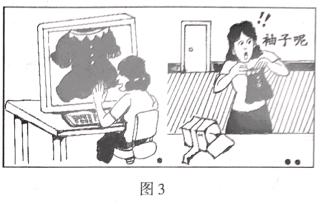

2018年北京市中考政治试题 · 选择题 第11、12、13、14、15题
依托“墨子号”量子科学实验卫星,我国某量子研究团队实现了多项世界领先的量子通信技术突破。回答第3、4题。
11.今后,课堂上,可能们一台萌萌的机器人带着同学们朗读；考场内。可能出现一台机器人组织考试……“机器人能不能完全代替教师?”同学们就此展开讨论。下列说法正确的是
A.教师只传授知识，机器人完全可以代替
B.只要能让学生开心,机器人就能完全代替教师
C.如果机器人不具备塑造学生心灵的本领,就不可能完全代替教师
D.只要机器人能教学生做题、批改学生作业,就可以完全代替教师
12.观察图3漫画,下列认识正确的是

①消费者应该拒绝网络购物
②该实物与图片不符,侵犯了消费者合法权益
③消费者只能通过诉讼途径维护自己的合法权益
④消费者可以与商家协商解央问题
A.①② B. ①③ C.②④ D. ③④
13.某班同学对社会生活中的事件进行讨论，下列判断正确的是
| 事件 | 判断 |
① | 某位大学三年级女生应征入伍。服役期间表现优异,成为特战队员 | 这是在依法履行宪法规定的基本义务 |
② | 某退休教师将自己的所有财产捐赠给学校 | 这是在依法行使自己的文化教育权利 |
③ | 某公司未经允许使用名人照片做广告,被判侵权 | 该公司侵犯了他人的知识产权 |
④ | 某人把两辆共享单车据为已有,被判处有期徒刑6个月,并处罚金人民币3000元 | 这种行为 触犯了刑法，应受刑罚处罚 |
A.①② B.①④ C.②③ D.③④
14.北京市初中开放性科学实践活动,提供了依托绢人,剪纸、鲁班锁等国家级非物质文化遗产开发的课程,这些课程具有历史底蕴和文化特色。同学们参加这些课程
A.能感受到中华传统文化的魅力 B.就是为了和非遗传承人交朋友
C.能够成为技艺高超的非遗传承人 D.主要是为了增强对中国现代艺术的认识
15.多年来,北京市一直对口支援新疆维吾尔自治区和田地区发展,用心用情做好援疆工作。通过精准扶贫,助推30余万人脱贫。北京极疆有利于
①促进各民族共同繁荣
②实现共同富裕的目标
③解袂我国发展不平衡不充分的问题
④发挥集体经济在国民经济中的主导作用
A.①②③ B.①②④ C.①③④ D.②③④